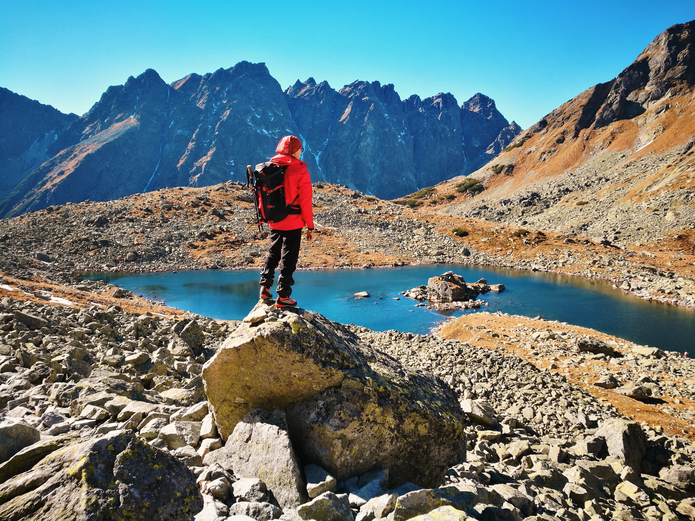

Merhaba ben Deniz Özer Demir. İstanbul'da yaşıyorum. Film izlemeyi, doğa yürüyüşleri ve yemek yapmayı seviyorum, şimdilerde yazılıma merak sardım, yeni şeyler keşfetmekten keyif alıyorum.

Doğanın insana verdiği huzuru çok seviyorum.